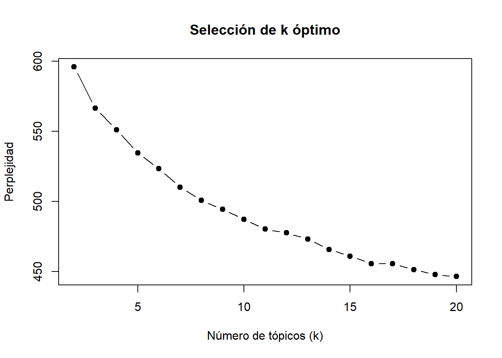
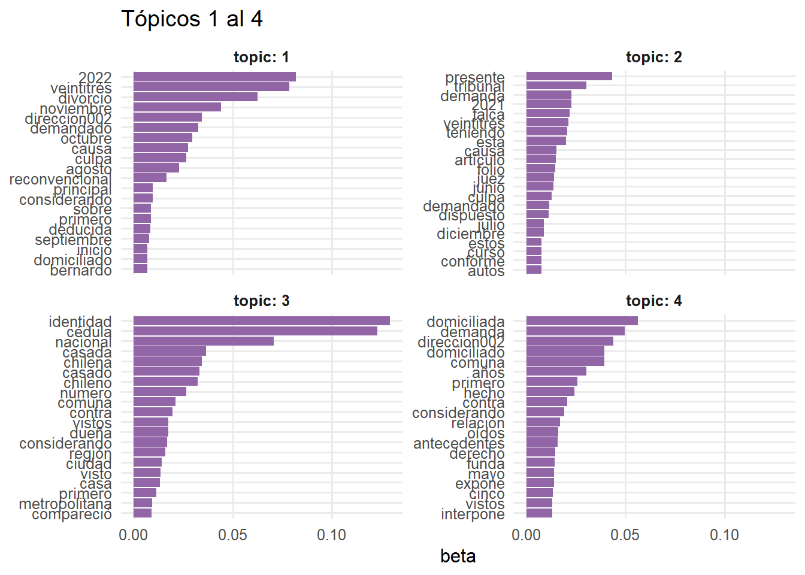
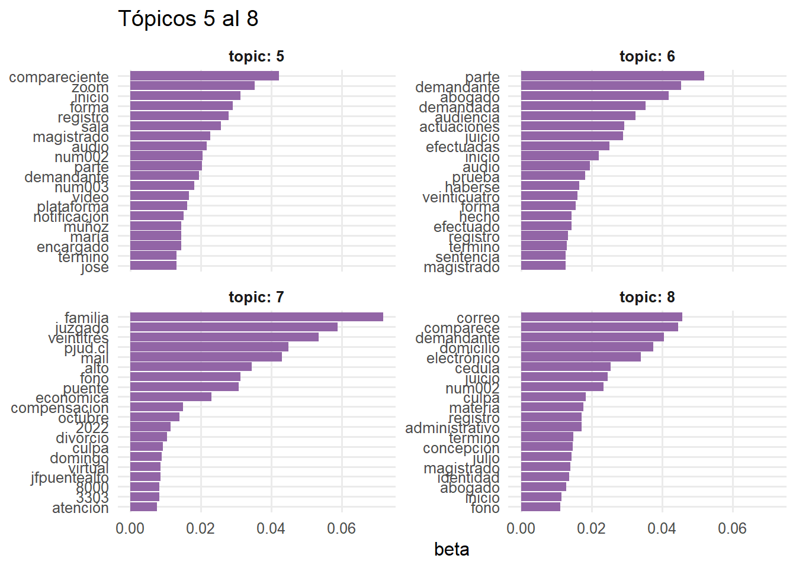
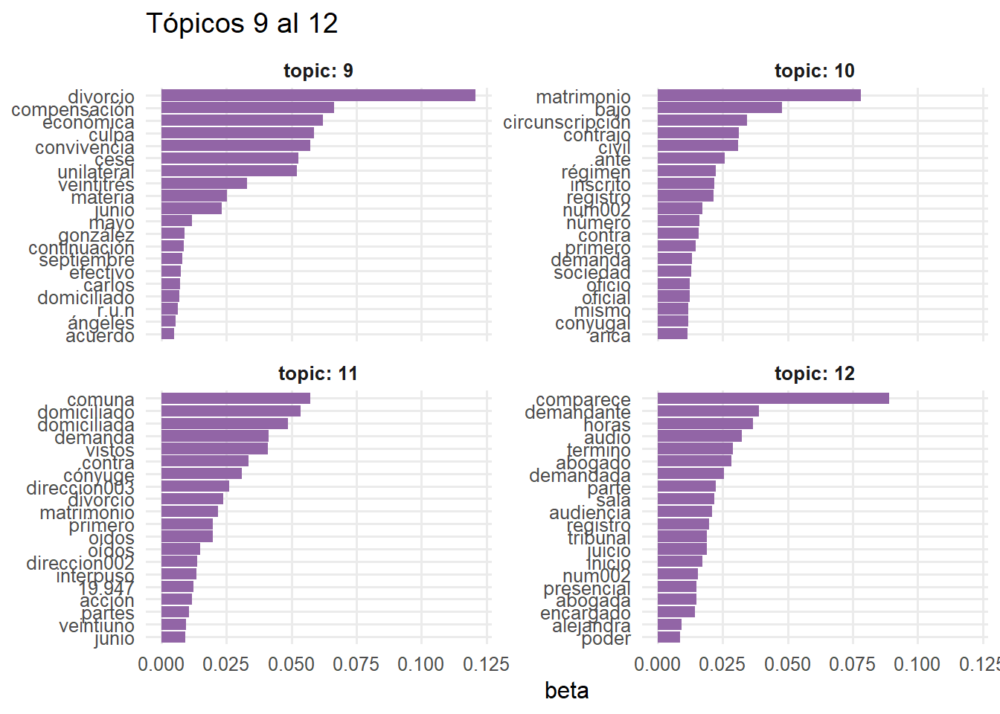
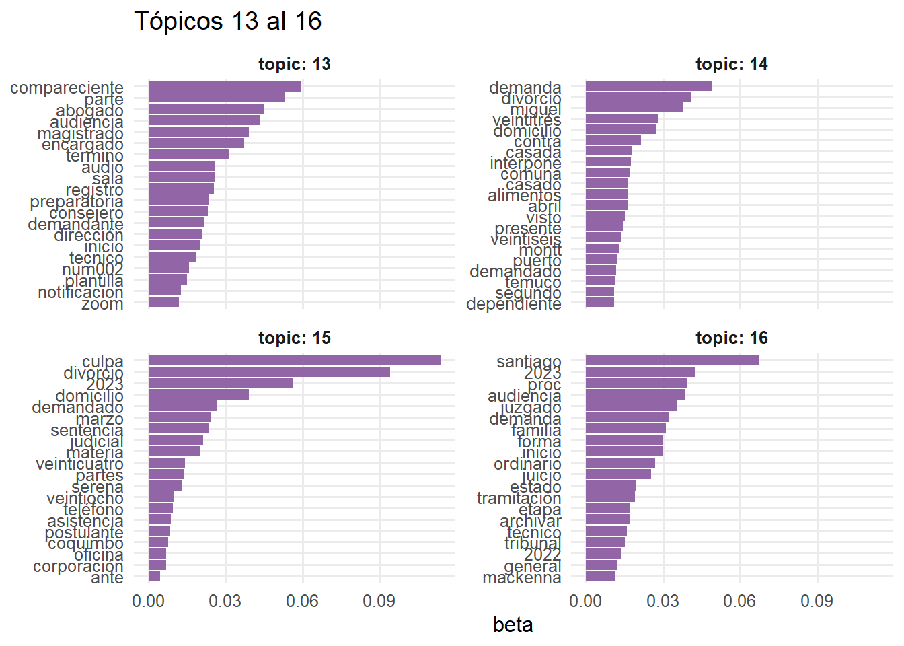

Presentación
El análisis de tópicos nos permite realizar una primera selección y mapeo del corpus de sentencias. En este documento se presentan dos formas para realizar un análisis de tópicos: (I) inductivo mediante el uso LDA, (II) deductivo mediante el uso de KeyATM.
El primer tipo, nos permite estimar la cantidad de tópicos óptima que el corpus ofrece, permitiendonos explorar desde los datos mismos.
El segundo tipo, nos permite estimar la cantidad de documentos que pueden vincularse a los tópicos teóricamente propuestos.
Ambos nos permiten ver la probabilidad de que los documentos se relacionen con cada tópico.
En una primera instancia, este análisis de tópicos nos permite explorar el corpus, pero al mismo tiempo realizar una primera selección de documentos a partir de mayor probabilidad de representar el tópico.
Datos
Se presentan 887 sentencias
- responden a la materia “DIVORCIO POR CULPA”
- emtre los años 2023 y 2024.
Análisis de tópicos
I. INDUCTIVO
Análisis de perplejidad (k óptimo)
El análisis de perplejidad nos indica que el número óptimo de tópicos es 16.
Palabras por tópico
# A tibble: 16 × 2
topic palabras
<int> <chr>
1 1 2022, veintitrés, divorcio, noviembre, direccion002, demandado, octubr…
2 2 presente, tribunal, demanda, 2021, talca, veintitrés, teniendo, esta, …
3 3 identidad, cédula, nacional, casada, chilena, casado, chileno, número,…
4 4 domiciliada, demanda, direccion002, comuna, domiciliado, años, primero…
5 5 compareciente, zoom, inicio, forma, registro, sala, magistrado, audio,…
6 6 parte, demandante, abogado, demandada, audiencia, actuaciones, juicio,…
7 7 familia, juzgado, veintitrés, pjud.cl, mail, alto, fono, puente, econo…
8 8 correo, comparece, demandante, domicilio, electrónico, cedula, juicio,…
9 9 divorcio, compensación, económica, culpa, convivencia, cese, unilatera…
10 10 matrimonio, bajo, circunscripción, contrajo, civil, ante, régimen, ins…
11 11 comuna, domiciliado, domiciliada, demanda, vistos, contra, cónyuge, di…
12 12 comparece, demandante, horas, audio, termino, abogado, demandada, part…
13 13 compareciente, parte, abogado, audiencia, magistrado, encargado, termi…
14 14 demanda, divorcio, miguel, veintitrés, domicilio, contra, casada, inte…
15 15 culpa, divorcio, 2023, domicilio, demandado, marzo, sentencia, judicia…
16 16 santiago, 2023, proc, audiencia, juzgado, demanda, familia, forma, ini…Se indica que agrupe las 20 palabras con mayor probabilidad de ser parte del tópico.




II. DEDUCTIVO
Modelo KeyATM (Keyword Assisted Topic Models)
- permite proponer palabras semilla (seed words) por tópico, que se utilizan como anclas semánticas
- bayesiano y con probabilidades interpretables
- en su output nos entrega un objeto data.frame que indica la probabilidad de cada documento al tópico (esto implica disntiguir bien los elementos cuando realizamos el corpus)
Identfiicar los tópicos y sus palabras semilla
En este paso es importante tener claridad de los tópicos que nos gustaría probar que permitan capturar correctamente la “gramática moral” y la relación con los ideales democráticos (igualdad y autonomía personal) en la vida familiar.
# Definir topicos
palabras_clave <- list(
"igualdad_carga_domestica" = c("cuidado", "trabajo", "carga", "casa", "doméstica", "hogar", "responsabilidad"),
"igualdad_parentalidad" = c("crianza", "padre", "madre", "hijo", "hija", "participación"),
"autonomia_personal_restringida" = c("violencia", "violencia física", "violencia psicológica", "infidelidad"),
"derecho_proyecto_propio" = c("carrera", "proyecto", "vida", "desarrollo", "personal")
)Definir el número de palabras por tópico
# Ver palabras por tópico
top_words(modelo_keyatm, n = 15) 1_igualdad_carga_domestica 2_igualdad_parentalidad
1 divorcio divorcio
2 demanda identidad
3 comuna cédula
4 culpa demanda
5 veintitrés culpa
6 mil dos
7 dos mil
8 casa [✓] comuna
9 san n
10 familia nacional
11 domiciliada domiciliada
12 compensación domiciliado
13 juzgado primero
14 cédula veintitrés
15 domiciliado considerando
3_autonomia_personal_restringida 4_derecho_proyecto_propio Other_1
1 matrimonio juzgado parte
2 demanda familia demandante
3 n divorcio abogado
4 año juez compareciente
5 bajo culpa audiencia
6 divorcio virtual inicio
7 veintitrés personal [✓] run
8 dos tribunal ruc
9 comuna sentencia dos
10 identidad ángeles audio
11 mil atención mil
12 cédula copiapó comparece
13 circunscripción teléfonos termino
14 vistos economica registro
15 primero cruz nº
Other_2 Other_3
1 santiago n
2 audiencia divorcio
3 proc alto
4 inicio domicilio
5 ruc juzgado
6 demanda zoom
7 forma fono
8 parte puente
9 divorcio comparece
10 familia culpa
11 juicio familia
12 f horas
13 juzgado identidad
14 ing veintitrés
15 ordinario registroEl data.frame doc_topicos nos permite cuantificar, a un nivel general de los documentos, a cual tributan más cada uno en los tópicos propuestos, indicando su probabilidad. Con ello, podemos ver cuáles tienen mayor afinidad (o mayor probabilidad) con el tópico y seleccionar un primer corpus reducido.
sjmisc::frq(doc_topicos$topico)x <character>
# total N=887 valid N=887 mean=3.93 sd=1.70
Value | N | Raw % | Valid % | Cum. %
-----------------------------------------------------------------
1_igualdad_carga_domestica | 61 | 6.88 | 6.88 | 6.88
2_igualdad_parentalidad | 166 | 18.71 | 18.71 | 25.59
3_autonomia_personal_restringida | 199 | 22.44 | 22.44 | 48.03
4_derecho_proyecto_propio | 10 | 1.13 | 1.13 | 49.15
Other_1 | 308 | 34.72 | 34.72 | 83.88
Other_2 | 86 | 9.70 | 9.70 | 93.57
Other_3 | 57 | 6.43 | 6.43 | 100.00
<NA> | 0 | 0.00 | <NA> | <NA>IMPORTANTE: mejorar las categorias del modelo keyATM